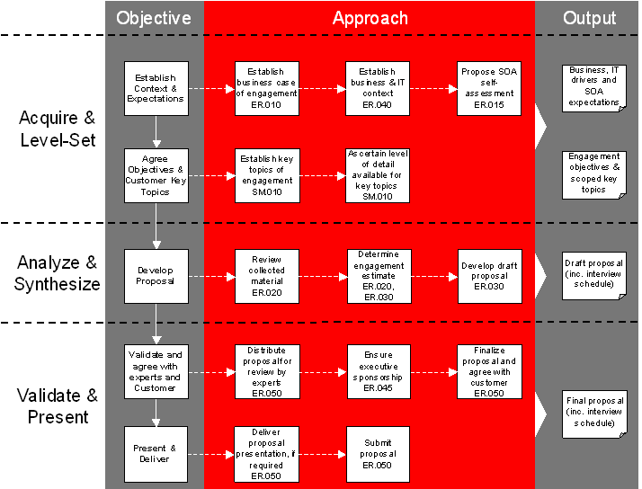
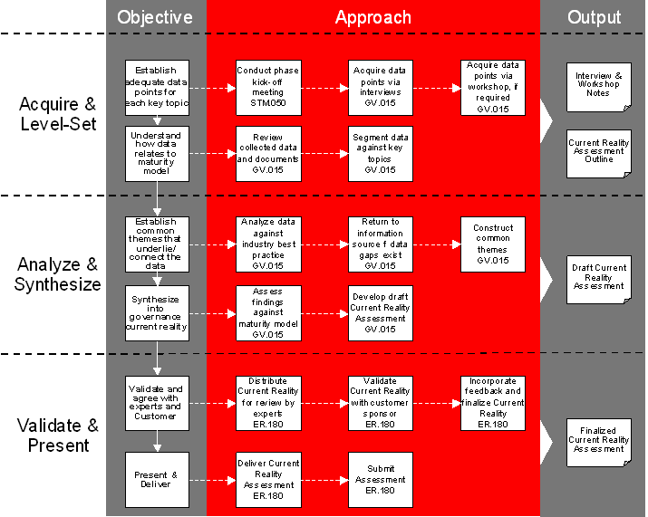
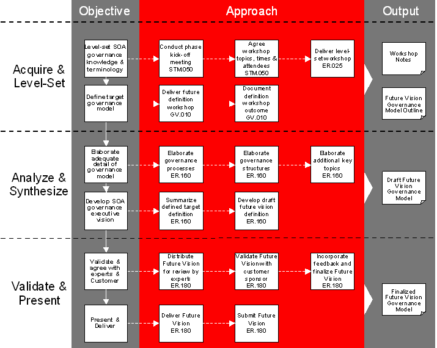
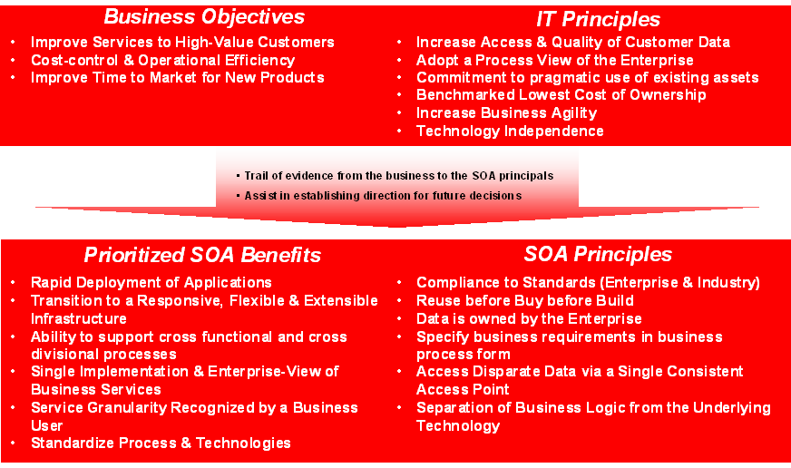
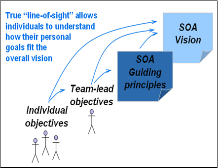
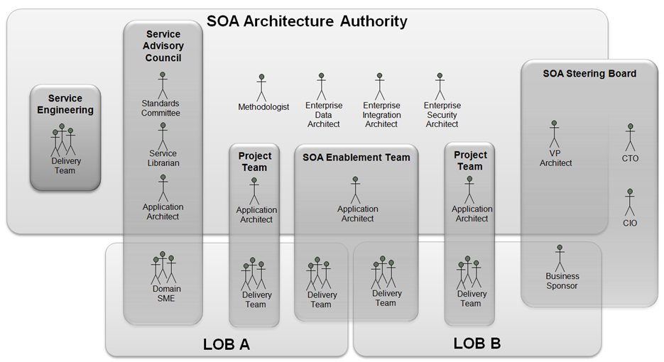
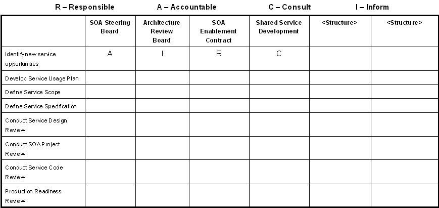
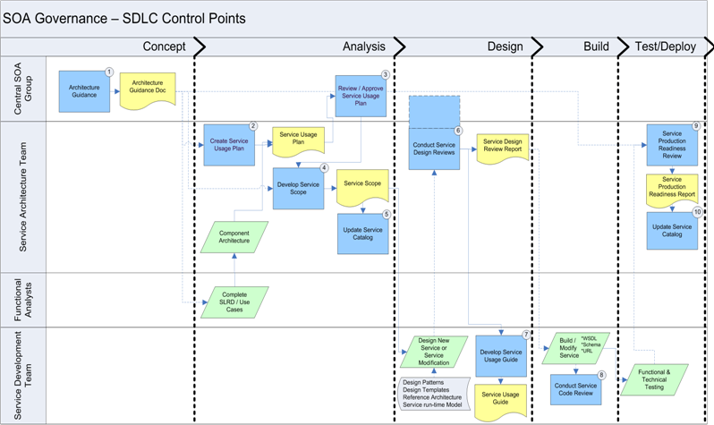
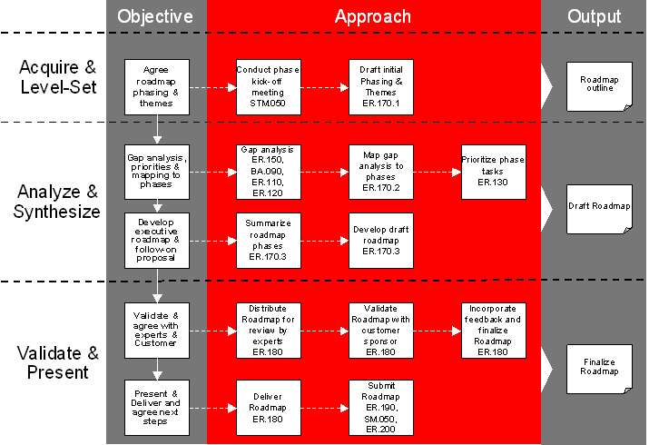

OUM |
SOA Governance Planning Supplemental Guide |
||
Method Navigation |
Current Page Navigation |
||
|
|
||||||||
This document contains OUM supplemental task guidance for the execution of a service based on the SOA Governance Planning View.
The task guidelines in this document should be used to supplement the guidelines that appear in the OUM Task Overview.
Once the organization has agreed that a SOA Governance Planning engagement meets their needs, Mobilization can begin. Mobilization must be done thoroughly as it is all too easy to over-promise and under-deliver if the boundaries for the engagement and the content of the deliverables are not spelled out properly, or if the resources needed to execute the engagement are unavailable. Taking the time and making the effort to set and close scope properly will result in a smooth engagement and a satisfied organization.
The following is a suggested workflow for Mobilization:

The important part of this task in the context of this view is to establish the business and IT context and expectations. Typically, by using a combination of business and IT interviews you obtain an understanding of the key business and IT drivers affecting the company. Example business drivers are:
Business drivers should be obtained from the most senior business executives willing to participate. In some cases, that might be representatives from the LOB, and in other cases it might be IT liaisons to the LOBs. If multiple organizations are taking part in the service, then multiple interviews may be needed to get input across each LOB.
Following the business interviews, IT executives are interviewed to obtain a list of current IT objectives. Example IT objectives are:
SOA Assessment results can be factored into the discussion. During the interview, it would be helpful to provide the list of business drivers as a reference. Ideally, business drivers will map to a set of IT objectives that help provide continuity to the vision strategy.
The outputs of the interviews should be summarized and formalized into the draft version of business and IT context that is sent out to all business and IT executive participants for review and comments.
An engagement based on this view delivers the following benefits for the organization:
It delivers the following benefits for the practitioners:
During this type of engagement, the maturity assessment is about conducting an assessment to determine the SOA maturity. Consider having the organization complete a SOA Self Assessment.
Benchmarking the current state builds mind share across the enterprise, and makes it easier to build a focused, step-by-step roadmap towards increased SOA maturity. The first step towards a benchmark is to conduct a SOA Self Assessment.
Highlighting and discussing differences that arise in this way will allow for the organization to:
DETERMINE ENGAGEMENT SCOPE
The scope of the engagement must be clarified in respect to the organization ’s key topics that will form the basic table of contents to be covered. Agreement must be reached on the following:
Key topics with the same questions include, but are not limited to the following examples:
Key Topic |
Current Reality (Sample Questions) |
Future Vision (Sample Activities) |
|---|---|---|
| SOA Principles |
|
|
| SOA Reference Architecture Governance |
|
|
| Collaboration |
|
|
| SOA Communication |
|
|
| IT/SOA Organization Structure |
|
|
| IT/SOA Governance |
|
|
| Service Development Lifecycle Governance |
|
|
| Service Operation Lifecycle Governance |
|
|
Out of direct scope of these types of SOA Governance Planning engagements (but which may form part of a follow-on engagement), and which you should bear in mind when considering successful Governance for SOA, are:
Key Topic |
Topic Description | How to Address |
|---|---|---|
| Skill Set Alignment |
|
The Roadmap should recommend an incremental approach to increasing an organizations skill and expertise. This can be done in a generic manner without going through a formal interview and assessment for the IT staff. |
| IT Metrics and Measurement |
|
During Current Reality, capture a high-level understanding of how the organization currently specifies IT metrics and how these are measured against industry best practices. The Roadmap can recommend a separate initiative that specifies an initial set of SOA metrics which are then built on over time. |
| Funding Model |
|
During Current Reality, capture a high-level understanding of how the organization currently funds shared infrastructure projects. The Roadmap can recommend a separate initiative which determines if the current means of funding are sufficient |
Having established the key topics that the engagement will cover, it is important to understand how much detail is available for each of them.
The guidance here is to get enough information to be able to understand the situation and make value-judgments about it. By no means does this require a 100% understanding or “total depth” approach.
Pragmatism: The Importance of an Iterative and Timeboxed Approach
SOA Governance Planning is not the kind of activity that is as easily or definitively finished in the same way as a configuration exercise can be described as finished. There is always more detail that could be fleshed out, or another layer of process that could be defined. In this mode, SOA Governance Planning could easily become very academic, waterfall-like, even an “analysis-paralysis” paradigm. Therefore, scoping exercise must take into account two key pillars of OUM that will assist that the engagement is successful.
Timeboxing: Irrespective of whether the engagement is time and materials or fixed price; it should be timeboxed. Ensure that the customer is aware that each area is timeboxed, and that sufficient detail will be arrived at during each area to draw reasonable conclusions on a list of prioritized key topics. If, for some reason, activities take longer than agreed, then lower priority topics will have to be de-scoped from the timebox, or the timebox extended.
An Iterative Approach: It is critical to the success of the SOA Governance Planning engagement that an iterative approach is taken, both to the work itself, and to the production of work products. For the work products: so that throughout the areas of the engagement, work products are under way; both so that preparation time at the end of the area is minimized, and to ensure that hypothesis-led thinking, ideas and themes are shared within the team from the start to maximize the time for review, brainstorming, and creativity. It is especially important to iterate the end of area presentations.
Understanding the organization’s expectations of SOA in terms of business and IT benefits will enable you to figure out what level of SOA governance will be required to achieve those goals.
Keep in mind, that the timeline of the engagement (Current Reality – Future Vision – Roadmap) may not always be contiguous. This arises because at the end of an area, it may not be possible to assemble the stakeholders for the Stakeholder Presentation in a timely manner. Project planning in advance can mitigate to an extent against this contingency, and some limited activities from the next area can begin during a hiatus between areas. Nonetheless, this can have an adverse effect on estimating, burning down team days from the next area’s timebox very quickly.
It is recommended at this point to determine the required number of workshops, including the dates and times and the list of participants with appropriate caveats about deviation from the schedule. Unfortunately, too many times organizations deviate and individuals postpone or cancel attendance.
Once the engagement has been scoped, the engagement lead should determine a level of effort (LOE) for each delivery area and stream, which will combine into an estimate for the engagement as a whole. A number of factors can affect the estimate in addition to the common factors, such as the availability of enterprise materials, in particular business models, org charts, sample models, service engineering process documentation, etc. If this material is not available, effort must be included to collect or even create this kind of material, as it is an important input to this kind of engagement.
You should also consider which customer stakeholders should be involved in the process and in which roles. The exact roles required from the organization will vary for each organization. Detailed consideration should be given to organizational navigation to ensure that all relevant stakeholders are included. Often the organization is not aware of who should or should not be involved.
Try to obtain detailed organization charts for the organization. This is an effective place to start when determining who to involve in the engagement. A candidate list should be prepared, and reviewed internally, before proposing to the organization.
In addition, it is recommended to identify at least these two organization roles:
Business executives should also be asked about their plans for SOA – what they feel it means to them, both in terms of benefits and challenges. The results of their SOA Assessments would provide a good starting point for this discussion. Do not be surprised if the business executives do not have an opinion. At the end of the day, business executives just want to get their projects developed quickly and with quality and they do not care if IT uses SOA or ABC.
SOA should also be discussed with IT executives in order to understand their perceived benefits and challenges. SOA Assessment results can be factored into the discussion.
When the draft statement of work for the engagement is ready, it should be validated. Incorporate modifications from reviews and Stakeholder Presentation feedback. Iterate with the stakeholders to reach the final plan.
In certain instances, especially if the engagement has been scoped to accommodate a large number of divisions, locations and additional key topics, it is advisable to present the statement of work so that all stakeholders are comfortable with what is being proposed, the approach and the expectations of the enterprise.
A pragmatic and effective Roadmap cannot be built until there is a common understanding on the current situation. Many organizations will comment that “we know what’s wrong” or similar. Simply put, unless there is a wide consensus as to what is right and wrong (a true benchmark), it is difficult to put in place the steps to take them where they want to go. Without Current Reality, the proposed Roadmap will probably be built from assumptions, hearsay and conjecture. Even worse, the roadmap could be so generic that it will be of little use to the organization.
Therefore, once there is a shared agreement as to where the organization is today, the next step is to conduct a current reality assessment. The current reality assessment provides important information on baseline conditions and helps determine what changes will have the greatest positive impact on the organization. The current reality assessment also provides early indication of potential areas of resistance or implementation barriers.
The following is a suggested workflow for Current Reality:

Mobilization, including scoping, was executed because it is all too easy to over-promise and under-deliver if the boundaries for the engagement and the content of the deliverables are not spelled out properly, or if the resources needed to execute the engagement are unavailable. Therefore, at the beginning of the engagement and at the beginning of each area you should hold a kickoff meeting. Therefore, a team orientation should be conducted at the beginning of Current Reality.
As stated previously, a pragmatic and effective Roadmap can only be built once there is a common understanding of the current situation. This must be understood before you start the Current Reality kickoff meeting, but should also be emphasized as part of the presentation.
The Current Reality kickoff meeting has 2 focuses:
The Current Reality kickoff meeting should be attended by the enterprise sponsor and other important enterprise stakeholders. Work with the enterprise sponsor and make sure that they co-present in order to emphasize its importance. With the stakeholders in the room, cover the structure and approach of the engagement. Provide more detail around the Current Reality area, as more detail of the other areas will be delivered as they are started. You should also educate the organization on the Current Reality workflow.
Examples of topics for the kickoff workshop are:
As there may be a couple of weeks between Mobilization and the start of the engagement, it is advisable for the engagement team to review the following documents prior to the kickoff meeting:
During this task, you perform a current reality assessment on SOA Governance. This is executed early in the engagement, as part of the Current Reality area.
Follow the steps described in the task. Additional guidance is described for some of the steps:
No. |
Task Step | Supplemental Guidance |
|---|---|---|
| 3 | Understand how data relates to areas of the review areas. | Use the SOA Domain Model as the areas in this task step. When you segment the data against the Domain Model, and the key topics you have identified during scoping (SM.010, Define and Confirm Scope) common themes and patterns start to emerge that highlight the greatest challenges the organization will encounter for achieving the benefits of SOA. |
| 4 | Establish common themes that underlie/interconnect the data. | SOA Governance is still a new discipline and that it is still early to have any comprehensive publicized industry best practices, therefore try to gather as much best practices as possible. If there is data or persons available from earlier similar engagements, use them if possible. Also, if there is a senior person available with experience in the area, ask if he or she can validate the results, but keep in mind that you do not have to wait until you have nearly completed your Current Reality Assessment before asking for advice. If you have the result from past similar engagements, they may help to give you indications on where companies are struggling with adopting SOA. But DO NOT let another company’s Current Reality assessment blinker your thinking for the current assessment. |
| 5 | Develop draft Current Governance Model. | Assess your findings against the SOA Maturity Matrix and if available, against past similar engagement findings. Refer to the SOA Maturity Matrix as a guideline. As with all assessments, it is very rare that you find a perfect quantitative response to qualitative analysis. Therefore, you need to use your experience and best judgment on how the company fares against the SOA Maturity Matrix. |
Generally, It is preferable to use a presentation as it is quicker to produce and easier to change as you go. It allows you to focus on the work at hand: designing SOA governance instead of spending time just writing text few people will ever read.
Attendance: At the kickoff meeting, you should try and find out who will be attending the delivery of the Current Reality Assessment. The Current Reality Assessment should be delivered to the executive stakeholders. It may be appropriate to invite others involved in the execution of Current Reality. However, the larger the audience, the more difficult it is to reach conclusions in the presentation, which is crucial.
Duration: The duration of the delivery of the Current Reality Assessment should consume somewhere between 60 – 120 minutes in order to maintain a high level of interest in the audience.
Objective: It is important to gain agreement that the assessment is in-line with expectations and is correct to the best of their knowledge. If there are any discrepancies then these need to be discussed, noted and fleshed out straight after the meeting. At the conclusion of the presentation of the Current Reality Assessment, allow adequate time for a question and answer period in order for the organization to satisfy themselves that they understand the assessment.
Findings: The executive audience will be more interested in rationale and outcomes than in the detail of the manner in which they were obtained. The supporting detail for the presentation should be in an appendix of the presentation. This appendix can be used as supporting data for any specific finding that the executives may wish to delve into and can be used by the organization. In addition, this supporting data can be used as a string foundation on which to build the future vision phase. If there are any discrepancies or holes in our findings then do not try and hide the fact, work with the organization to expand and complete the story.
Delivery: The presentation should be delivered by the engagement project manager, given that this is an executive audience.
The Future Vision is not about defining the structures and processes required for the organization to execute their next project. The Future Vision area is about defining the optimal structures and supporting processes to which the organization can transition over a 2-3 year period while at the same time not over emphasizing the current barriers to success. It is important to understand that there is no “one size fits all” Governance Model; therefore, a collaborative approach is the most pragmatic approach to jointly design the appropriate SOA Governance Model.
A Future Vision for SOA Governance consists of but is not limited to:
The process of creating the Future Vision consists of facilitating the organization through the process of understanding the needs for governance and translating those needs to workable plans. This will be done through delivery of:
An agreed on Future Vision Governance Model gives the Roadmap area a solid foundation on which to build a pragmatic, effective and incremental Roadmap.
The following is a suggested workflow for Future Vision:

Mobilization, including scoping, was executed because it is all too easy to over-promise and under-deliver if the boundaries for the engagement and the content of the deliverables are not spelled out properly, or if the resources needed to execute the engagement are unavailable. Therefore, at the beginning of the engagement and at the beginning of each area, you should hold a kickoff meeting.
During Future Vision, there are two workshops that are relevant:
The project sponsor and other important stakeholders should attend the Future Vision kickoff meeting. With the stakeholders in the room re-iterate the structure and approach of Future Vision and especially stress the importance of the workshops and their attendance by senior personnel.
The best approach would be to finalize the number of workshops, dates and times and the list of participants during Mobilization (as part ER.030, Set and Agree on Plan for Envision Engagement). Unfortunately, too many times organizations deviate and individuals postpone or cancel attendance. Therefore, at the very latest at the kickoff meeting for the Future Vision area reiterate on the number of workshops, the locations, date and times and the confirmed attendance.
It is important to make clear that the Future Vision area is not about defining the structures and processes required for the organization to execute their next project. The Future Vision area is about defining the optimal structures and supporting processes that can be transitioned to over a 2-3 year period while at the same time not over emphasizing the current barriers to success.
It is also important to understand that you cannot solely define this Future Vision as this tends to lead to a generic Future Vision for all organizations. It is important to inform the organization that there is no “one size fits all” governance model and that a collaborative approach is the most pragmatic approach to designing the appropriate SOA Governance Model for them.
A Future Vision for SOA Governance consists of but is not limited to:
The process of creating the Future Vision consists of facilitating the organization through the process of understanding the needs for governance and translating those needs to workable plans. This will be done through delivery of:
You should also educate the organization on the Future Vision workflow.
Level setting workshops are necessary to help the organization develop a shared understanding of the role of governance in effective SOA adoption.
There are a great many types of governance that may exist at some level in organizations – IT governance, corporate governance and other regulation and compliance structures. However, SOA governance involves processes and disciplines that many organizations either do not have, have decided not to have or have in some form but not at an institutional level or in a systematized fashion. Terminology about SOA and SOA governance is often different from a given organization’s terminology, and may be entirely new outside of a few thought leaders in an IT organization. Organization structures may not map very well to SOA processes and may, in fact, hinder SOA adoption. For all of these reasons, it is important to bring the stakeholders in SOA adoption in an organization together to agree on the terminology, needs, goals and expectations for SOA governance to provide a foundation for those stakeholders to then discuss their desired future vision.
Attendance - People who make decisions about governance, and people who have responsibility for carrying out decisions about governance should attend. It is vital that all of these people have a common understanding of the definition, goals and objectives of SOA governance. Depending on the size of the organization and the scope of the SOA Governance Planning engagement, this may be quite a large group of people and may require multiple workshops. The actual attendees will vary depending on the structure of the organization, but typical decision making participants could be:
Input Required |
Typical Title/Role |
|---|---|
| Overall IT Vision/Direction Setting |
|
| Day-to-Day Decision Making |
|
| Architecture |
|
| Operations and Assurance |
|
| Project Delivery, Management and Oversight |
|
During Mobilization, the actual list of attendees should have been settled so that the calendars of the participants have been cleared. It is important to assess the relative importance of the participation of any given attendee – some are more necessary than others. If no one attends from the CIO’s office, for example, then the likelihood of misunderstanding or miscommunication is much higher, and buy-in is harder to obtain, which in turn makes the willingness or ability for the organization to change lower.
Contents - The workshop content should consist of the following topics:
The role of the project manager (as a facilitator) in this workshop is to communicate information, and to facilitate discussion about the applicability of these topics to the organization. There is a temptation in these discussions to bring the topics around to the current challenges with which the organization is faced, but this temptation must be avoided. For one thing, these challenges should have been uncovered and discussed during Current Reality. For another, the purpose of these discussions is to help the enterprise participants reach agreement on the needs for SOA governance, a lingua franca for discussing it, and the objectives of Future Vision.
From the experience in Current Reality, the facilitator should be able to tailor the workshop content to focus on areas on which an organization has less experience or more curiosity, and less on areas that are strong competencies. It is tempting to try to solve all of the issues facing a given organization. This runs the risk of expanding the scope, which results in either failing to meet the agreed scope or by having to deliver on the expanded scope. On the other hand, it is imperative for the facilitator to ensure that all of the agreed scope is addressed in the workshop.
This workshop should take place over the course of 3-4 hours. A shorter workshop increases the likelihood of getting the needed attendees time and attention, but decreases the depth at which the topics can be covered. A longer workshop runs the risk of jeopardizing the engagement because of the inability to get all of the participants together. Creating the right workshop is one of the more important things required to ensure the success of the Future Vision area. It may be advantageous, as a trade off between these forces, to conduct multiple, shorter workshops than a single, long one. Because of the possibility that these shorter workshops would need to take place over multiple days, it may be desirable to overlap the end of Current Reality with these workshops. This often works because many of the participants are different in direction setting and decision making than those that will be tasked with furnishing the details of current operations.
During this task, you develop the Target SOA Governance Model.
You use the Vision Definition workshop to lay the foundation for the future direction of governance for SOA for the organization. Therefore, the participants for the workshop must be the key decision makers with respect to SOA governance. Also, the participants must have attended the level set workshop (see guidance for STM.050.2, Conduct Team Orientation) before executing this task.
Contents - The Future Vision Definition workshop for SOA Governance should consist of facilitated discussion and exercises around the following topics:
Each of these topics should already be familiar to the participants by virtue of having participated in a Level Setting workshop. Objectives of defining SOA governance are to ensure that the organization understands the difference between SOA governance and other types of governance, and to define the scope of SOA governance for the organization.
Having agreed on the role and purpose of SOA governance for the organization, the next objective of the Vision Setting workshop is to drive recognition of the challenges of SOA.
SOA Challenges - After establishing the principles that will guide the overall delivery of SOA through governance, developing a joint appreciation for the challenges that must be addressed in SOA adoption and, accordingly, the breadth of scope of governance, is the next objective of the workshop. One effective means of accomplishing this is to review, at a high level, the implications of adopting SOA by reviewing a depiction of SOA reference architecture. The “high level” is a key point, because many of the attendees will not be technical people. However, describing the layers of the architecture, the responsibilities and relationships of those layers to one another and the disciplines required to support it will help to elicit discussion of the several points that will need to be addressed for effective SOA governance.
Some example questions that should arise would be:
These kinds of questions should be raised in the context of discussion of the reference architecture. If the organization has done some work on SOA reference architecture, or has an industry reference architecture that they particularly like, the discussion should focus around that. If not, then you should furnish a reference architecture that the facilitator feels comfortable addressing (such as, the SOA reference architecture from the SOA Domain Model).
Conducting an exercise to provide a breadth of perspective for SOA adoption challenges can be helpful to the goals of this section of the vision definition workshop. The participants can be split into groups representing different perspectives; at a minimum, one group representing a central shared services organization and other representing a line of business can be set up. Each of these participants would describe the challenges with adoption of SOA from the perspective of their part of the organization. The separate groups would then be brought back together to discuss their respective lists with the broader group. The results of the exercise and discussion from this part of the workshop will be used throughout the remainder of the workshop to ensure that the decisions made about governance structure and processes address the identified challenges.
In the context of SOA, you need guiding principles to be established, to guide, inform and support the way in which an organization sets about fulfilling its mission through the use of SOA Principles. This provides traceability to support the use of the principles in explaining and justifying why specific SOA governance decisions are made. The SOA principles should support the IT Governance Principles.
The participants will already have developed an understanding of the types and purposes of principles during the Level Setting workshop. In addition to the SOA Objectives and IT Principles mentioned in the main documentation of this task, you should have a look at the SOA Benefits and SOA Principles:
SOA Benefits - The expectation of the enterprise on what benefits SOA will bring to their organization
SOA Principles - These are expressions of the goals for SOA adoption. They are often related to IT principles, but may merely express overarching goals that span IT principles (integration will be achieved using services) or affect the way in which they will be realized (services will be implemented using recognized industry standards).
This exercise and discussion allows the participants to see and agree on the principles that will guide all SOA governance efforts. You can see some principle examples in the figure below:

Having agreed on the principles, guided discussion or another exercise may be used to establish linkages from business objectives to IT objectives to SOA principles. Linkages are a very important step in this process because they provide line-of-sight from SOA-related efforts to the principles that they satisfy, rolling up to meeting IT principles, business objectives or, in many cases, both. SOA principles never exist in their own right; they always have direct linkage. With established linkage, it becomes possible to trace efforts directly to business benefit, which is crucial to the ability to sustain SOA adoption through the early adoption investment.

There are as many possible governance structures for SOA governance as there are organizations to adopt SOA. That said, there are typical kinds of relationships among organization components and the responsibilities of those components to SOA adoption that can be represented in various ways. The workshop should map the enterprise to those typical SOA organization components in a way that provides the necessary coverage with the least disruption to the organization. This is crucial, because as in any organizational change, this is one of the largest typical barriers to organizations that seek to adopt SOA.
In order for SOA governance to be successful, governance has to be lightweight and people have to be empowered to make decisions.
The typical areas of responsibility for SOA governance are depicted in one way on the following example picture:

These areas of responsibility, briefly, consist of the following:
| Area | Description |
|---|---|
| SOA Steering Board | Leadership structures such as IT/ SOA Steering Boards should preferably be staffed with senior management stakeholders who provide the executive sponsorship for the SOA initiative and set the business priorities. It is recommended to have both business and IT representatives to set and define the vision and strategy as well as establish the appropriate funding models. The SOA Steering Board should also be the final authority for any exception management decisions that need to be made. In many enterprises the roles performed by this structure can be addressed by existing IT steering boards or as extensions of IT steering boards. |
| SOA Architecture Authority | The SOA Architecture Authority not only enables the strategy execution as defined by the SOA steering board, but also is the custodian over the official SOA Reference Architecture. This structure tends to be staffed by internal experts, but in the early stages can be supplemented by external experienced practitioners. Roles focus around the different aspects of SOA architecture and methodology, from defining approved standards, processes, and products to adjudicating architectural priorities and issues. In many enterprises the roles performed by this structure can be addressed by the enterprise architecture team or an extension of the enterprise architecture team. |
| SOA Enablement Team (aka SOA Center of Excellence) | A SOA Center of Excellence (COE) allows enterprises to focus more resources and funding on innovation and project delivery while reducing the complexity involved in executing SOA. The SOA COE supports project teams in a variety of ways, from making available experts as a SOA skills and resource base, to enabling overall corporate competency development. While this team should be seen as a project enabler, they do have the charter to assure SOA governance compliance. This team tends to be staffed by experience SOA architects who understand the SOA Reference Architecture, associated standards, best practices, and defined SOA governance policies. In many enterprises the roles performed by this structure can be addressed by extensions to existing structures such as an Integration Competency Center. |
| Service Advisory Council | It is common for enterprises to define structures that are the custodians of the Service portfolios. Sample duties include maintaining the integrity of the taxonomy and metadata, assisting with Service candidate approval and with the development of a Services blueprint, and monitoring the Service usage/reuse. Example roles include Service registrar, Service portfolio owners, and business domain subject matter experts. |
| Service Engineering | It is common for enterprises to separate the development of applications from the development of Services as each approach can utilize a different development methodology and eases the option of outsourcing. Each approach requires a different mindset, processes, and organizational structures. |
As mentioned in the main task description, this part of the workshop should probably take the shape of a facilitated discussion where the participants will describe the parts of their organization that could or should take responsibility for these kinds of functions (mapping). Information from the Current Reality will be used to seed this discussion.
In mapping current organization structures to future governance structures, division of responsibilities among business units often comes up, also for SOA governance. The discussion of the division of responsibilities will raise questions of whether decision-making should be centralized, federated or hierarchical or some combination of those structure types. Different structure types may be appropriate for different kinds of decision-making. For instance, it probably makes the best sense for most organizations for SOA Steering to be centralized, but SOA Alignment could easily be hierarchical, especially in large, geographically distributed enterprises.
There are several processes that are necessary for effective SOA governance. These include but are not limited to:
| Process | Description |
|---|---|
| SOA Reference Architecture Management | The SOA Reference Architecture Management process defines a structured approach to review and approves changes to both the existing SOA Reference architecture and the current SOA Roadmap. Any updates are then communicated to the relevant stakeholders. |
| SOA Project Approval | The SOA Project Approval process assists enterprises in evaluating a projects appropriateness and alignment with the agreed SOA Roadmap. This process tends to supplement an enterprise's existing project investment process. |
| SOA Alignment (SDLC) | The SOA Alignment (SDLC) process complements an enterprise's existing SDLC process by adding formal design and architecture evaluation reviews at key control points. The process evaluates the alignment against established architectural criteria and business objectives. |
| SOA Service Infrastructure Management | The SOA Service Infrastructure Management process defines a structured approach to ensure that the SOA Platform including published services are maintained and that changes are communicated to stakeholders as new services are incorporated into the architecture. |
For each of the identified processes, use a RACI chart (see the main task guidance for more details about this) to understand the participation required of any of the governance organizations and the nature of that participation.
For example, given the sample RACI chart for SDLC Alignment in the table below for the “Identify New Services” task, the SOA Alignment Team might have the responsibility. The Shared Services Development organization would consult on that kind of activity. The SOA Steering Board would probably need to approve of the identified services. Finally, the Architecture Review Board would need to be notified of the results, since the development of the services that are eventually delivered would need to be monitored for architectural compliance. This would yield a RACI chart for that task that resembles the following:

In this task, you add detail and elaborate on the governance model defined during the workshop (GV.010).
You start with detailing the collaboration interface and boundaries which assists in getting agreement on the expectations each role has of the others when handing off work, receiving work, providing service, or collaborating. One way to identify interdependencies is to use the responsibility charts (RACI) and map these onto a process map, which highlights key points of interface. Once the key points of interface have been identified, investigate if the needed information from other roles should be identified. When this is performed over a number of different role perspectives, it is possible to develop draft input and output hard/soft document requirements.
The example below shows an organization's software development lifecycle (SDLC) and the touch points that SOA Governance has on this process:

Once the responsibility charts have been mapped to a process map, it is advantageous to then detail each process activity covering such aspects as:
The following table shows an example of a process description:
| Aspect | Value |
|---|---|
| Name | Create Service Usage Plan |
| Purpose | Eliminate the risk of service redundancy and assess opportunities of creating a new service. |
| Description | Identify: New service, opportunities to wholly reuse existing services, and/or modify existing services for reuse. |
| Trigger | SLRD complete - embedded in project workplan |
| Owner | Service Architecture Team / Project Architect |
| Participants | Functional Analysts, Service Department Team (for service modifications) |
| Approver | Central SOA Group |
| Escalation Point | Central SOA Group / SOA Steering Committee |
| Inputs | Arch Guidance Doc, SLRD (Functional Spec), SOA Reference Architecture, Service Identification Guidelines |
| Outputs | Service Usage Plan |
| Duration | 1-2 weeks |
| Templates | Service Usage Plan |
To test these interfaces, develop common scenarios and simulate process effectiveness. If a company has been executing on an SOA vision for a while, it should be possible to take the organization’s existing material as an input.
It is important that once the workshops have been executed that the output is driven to a workable level of detail. It is important that the organization’s senior management realizes this before the workshop creative process of the definition phase wears off. As much as the intensity and excitement of a visioning workshop focuses and accelerates change, there is a danger that as soon as people return to their jobs, the momentum will be lost. In essence, follow-up plans get pushed to the side while everyone catches up on the work they missed and deals with immediate business needs.
In essence, the output from the visioning workshops is part of the vision definition. Although this is a good start in communicating what each role does, it does not clarify it in a detailed manner.
Without delving into the detail, there will still be some misconceptions of the best SOA Governance Model. Common issues that might occur without more detail are:
Therefore, the SOA organizational roles need to be defined at a more detailed level, covering areas such as relationships, interdependencies and handoffs. This can be achieved by the following high-level steps:
Role Definition – Defines the expected outcome and responsibilities for each various SOA organizational roles, which state what results and tasks are to be attained within a timeframe. A role definition should not be seen as a job description but only highlights unique aspects of the role. As a starting point, harvest the outcome from the responsibility charts to develop a draft role definition. A completed role definition aids in identifying where there may be tension between current and future roles.
Collaboration Interface – Defines where roles interact with each other to provide input, carry out tasks for each other or collaborate on a task.
If additional key topics have been included in the scope (see SM.010, Define and Confirm Scope) such as a SOA communication plan. Do not forget to define the future vision for these as well.
You then develop a draft Future Vision Definition that will be used in the Future Vision Presentation (ER.180). The presentation for Future Vision should consist of all of the outcomes of the Vision Definition workshop. This will include:
You would typically start the presentation off with a recap of the goals of the Future Vision area that sets the stage for describing the outcomes. This also helps to avoid disagreements and keep the discussion on topic.
Summarizing the workshops and elaboration is an important step in gaining consensus for the outcomes of Future Vision. Even though the group that attends the presentation will largely be the same as the participants in the Future Vision workshops, it is not necessarily the case that all will have received the information the same way or have reached the same conclusions. Additionally, the elaboration of the workshop output will have occurred without the active participation of some of the attendees, most notably some of the senior leadership in the organization. Summarizing the Future Vision activities ensures that all of the attendees of the presentation will be at the same level of understanding of the outcomes in order to receive the Future Vision results.
The output of this would be draft Future Vision Governance Model.
The Future Vision Presentation has been created during the final step of the Future Vision task, ER.160, Develop Desired Future State. Some experienced SOA people should review this draft model; especially if this is the first time you have executed such an engagement. Afterwards, your project sponsor or customer project manager should validate the model. This is to make sure that our message/story is validated before we present to the organization senior management. Get some feedback from the project sponsor to see if the findings may be too sensitive to share beyond the executive team. Finally, incorporate the feedback you have received into the final Future Vision Governance Model.
Attendance: During the Future Vision kickoff meeting, you should have tried to establish who would be attending the delivery of the Future Vision Definition. The Future Vision Definition should be delivered to the executive stakeholders. It may be appropriate to invite others involved in the execution of Future Vision area. However, the larger the audience, the more difficult it is to reach conclusions in the presentation, which is crucial.
Duration: The duration of the delivery of the Future Vision Definition should consume somewhere between 60 – 120 minutes in order to maintain a high level of interest in the audience.
Objective: It is important to gain agreement that the Future Vision Definition is in-line with expectations and is correct to the best of their knowledge. If there are any discrepancies then these need to be discussed, noted and fleshed out straight after the meeting. At the conclusion of the presentation of the Future Vision Definition, allow adequate time for a question and answer period for the organization to satisfy themselves that they understand the Future Vision Definition.
Findings: The executive audience will be more interested in rationale and outcomes than in the detail of the manner in which they were obtained. The supporting detail for the presentation should be in an appendix of the presentation. This appendix can be used as supporting data for any specific finding that the executives may wish to delve into and can be used by the organization. In addition, this supporting data can be used as a strong foundation on which to build the Roadmap in the next area. If there are any discrepancies or holes in our findings then do not try and hide the fact, work with the organization to expand and complete the story.
Delivery: A senior practice member and the engagement project manager should deliver the presentation, given that this is an executive audience.
After you have delivered the Future Vision Definition, you should have confirmation and probably some specific data that needs to be documented in the Future Vision Definition.
The Roadmap area addresses how to transition from the Current Reality to the defined Future Vision in a pragmatic and effective manner. The Roadmap should take into consideration any of the organization's planning horizons and should also cover:
The following is a suggested workflow for Roadmap:

Mobilization, including scoping, was executed because it is all too easy to over-promise and under-deliver if the boundaries for the engagement and the content of the deliverables are not spelled out properly, or if the resources needed to execute the engagement are unavailable. Therefore, at the beginning of the engagement and at the beginning of each area you should hold a kickoff meeting.
The Roadmap area addresses how the organization will transition from their Current Reality to their defined Future Vision in a pragmatic and effective manner. During the kickoff presentation for this last area of the engagement, you should make clear the organization's planning horizons and what should be delivered as part of this area, such as:
You should also educate the organization on the Roadmap workflow.
The Roadmap kickoff meeting should also address the work products, the expectations of enterprise participation and the timeline associated with the completion of the Roadmap and eventual completion of the whole engagement. This presentation should be followed by a question and answer (Q&A) session to ensure that the participants understand the workflow. If necessary, the workflow is modified based on actions or questions to suit the needs of the customer but keep in mind the scope of the engagement.
During the kickoff presentation, you should also consider highlighting possible follow-up activities following the conclusion of the engagement. These activities will be based on issues, needs or opportunities identified during the execution of the engagement.
It is appropriate to review the outcome of Future Vision with the Roadmap kickoff participants. There are likely to be enterprise participants in the creation of the Roadmap that were not present to hear the delivery of the Future Vision presentation, and they may not have had an opportunity to review any of the Future Vision work products. Given that the Future Vision sets the priorities that will be used to establish the Roadmap, it is important to ensure that all of the participants have this context.
You develop the Future State Transition Plan as part of the Roadmap area, i.e., you develop a roadmap to get from the identified current state, to the Future Governance Model. It is executed in three separate iterations with other tasks being executed between each iteration. This first iteration is to define the phasing and themes.
Having educated and agreed with the organization on the parameters of the Roadmap area (during STM.050, Conduct Team Orientation), the definition of the Roadmap begins with factoring the information gathered during Current Reality and Future Vision into themes. Themes are a way to categorize and organize a set of activities into discrete organizational and governance goals that will yield part of the Future Vision. Themes describe an impetus for change. They are directly linked to the business, IT and SOA principles set forth in the Future Vision. Some examples of themes are:
Themes are defined jointly between both parties in the engagement. The information gathered from Current Reality, with respect to current organization governance maturity and the information gathered from Future Vision that establishes the enterprise’s organizational priorities will make reasonably obvious the major categories of the changes required. These categories represent themes.
Themes should be expressed in terms of the goals and portions of the Future Vision that they will realize once they are completed. In essence, themes are miniature mission statements. They become a way to socialize with all parts of the organization, especially those affected by the changes introduced through the theme, the need for and outcome of the work to accomplish the theme.
Once the themes have been identified, relative priorities need to be assigned to them (see ER.130, Produce MoSCoW Improvement List).
Once the themes have been identified and prioritized, an initial definition of phases for the Roadmap are made. Phases represent a fixed span of time during which activities will be conducted in one or more of the themes. The phases address the themes in priority order. The duration of phases can and should correspond to the planning horizons established during the Mobilization area of the engagement. For instance, if the short-term planning horizon is six months, then one or two phases (typically no more than that) are defined that address execution of activities along the high priority themes. This process of defining phases and mapping them to themes continues for the intermediate- and long-term planning horizons. The first definition of themes and phases constitutes the deliverable for this Roadmap workflow objective, and forms the basis for the remainder of the effort in the Roadmap area of the engagement.
An important point to consider in the definition of themes and phases is that there are very likely to be dependencies on changes that the organization will have to make that are both within and outside the realm of governance. For instance, service usage compliance cannot be put in place until services are available to be consumed. The availability of services depends on the definition of environments to contain those services, and probably implies that activities to define organizations for shared services engineering and shared infrastructure and its management have to be made first. If services are to be hosted on shared infrastructure, the implementation of a compliance process might then be dependent on the build-out of the necessary infrastructure. Identification of such dependencies is important to delivering a Roadmap that can be delivered according to plan.
Before executing the next iteration of this task, you review the discovery findings (ER.150) and carry out the gap analysis (BA.090).
During Roadmap, review the findings and use this when you perform the gap analysis, determine priorities, and map to phases. For more details about this, please review the guidelines for BA.090, Identify Process Improvement Options.
This task is carried out during Roadmap. It is performed somewhat different than what is described in the main task. The improvement options here are not necessarily all related to existing processes, but may be to create complete new processes – in particular governance processes – or may also be related to organization changes or other governance topics, as agreed on during scoping.
During the first iteration of the Future State Transition Plan (ER.170.1), you have already agreed on the themes and phases for the plan, so what remains is to formulate the plan to execute the phases. This formulation starts with an analysis of gaps between the Current Reality and Future Vision as it pertains to the work to accomplish the goals of a given theme. This work is done in concert with organization staff, especially those that will own the output of the themes. The gaps will lead to the definition of a set of activities.
The activities for the near-term planning horizon must be defined to a level at which an order of magnitude of effort can be associated with them. This includes a number of different components:
An example of gap analysis would be the theme of putting in place a services roadmap. A responsibility chart for the services roadmap management process would likely have been done during Future Vision. If not, it should be done prior to beginning the gap analysis. This will establish the core of the Future Vision for services roadmap management. With the process in hand, a comparison with the support for the process that the organization has can be done, which will likely raise a number of gaps. These gaps might include:
For example, the activities would be representations of the steps involved to fill these gaps.
Keep in mind that this is not a conventional project planning exercise. Except in rare instances where the negotiated scope of the engagement requires it, no project plan will be produced to represent the Roadmap in terms of a Gantt chart or similar project management deliverable. However, in order to appropriately allocate activities to phases with confidence, some idea of the level of effort involved must be agreed on with the organization.
As part of the work on the roadmap, perform a benefit analysis of the proposed governance improvement. This allows you to:
As part of the work on the Roadmap, perform a risk analysis for the proposed changes. If done correctly, showing there are risks but that they can be mitigated will both ground the stakeholder into the reality (governance is difficult) and reassure them (we can manage the difficulties).
You develop the Future State Transition Plan as part of the Roadmap area, i.e., you develop a roadmap to get from the identified current state, to the Future Governance Model. It is executed in three separate iterations with other tasks being executed between each iteration. This second iteration is to map the gap analysis to the phases.
Once the activities for completion of each theme and the level of effort for the activities in the near-term have been agreed on (BA.090), the activities may be allocated to phases. It is possible, even likely, that a given activity will further the accomplishment of more than one theme. For instance, the definition of quality gates in the organization’s software development lifecycle to enforce the use of services, or to harvest services, will be necessary for establishing service usage compliance and for shared services development. It is also likely that themes will span multiple phases. Some themes, such as establishing SOA effectiveness measurement and accountability to business drivers, take a substantial amount of time to fully complete. Accordingly, splitting the work to accomplish the theme into multiple phases allows delivery of some support for the theme to show progress. This is especially important when activities support more than one theme.
Phases and tasks will be elaborated in detail for the near-term planning horizon agreed on during Mobilization. For the intermediate term horizon, phases will be outlined, but tasks will be less defined. For the long-term planning horizon, themes will be outlined, but not broken into phases or tasks.
This task is executed during the Roadmap area. Once the themes have been identified during ER.170, relative priorities need to be assigned to them. There are a number of data points that may be used to establish the MoSCoW priorities:
Once the themes have been identified and prioritized, an initial definition of phases will be performed in the following task, ER.170.3, Develop Future State Transition Plan.
You develop the Future State Transition Plan as part of the Roadmap area, i.e., you develop a roadmap to get from the identified current state, to the Future Governance Model. It is executed in three separate iterations with other tasks being executed between each iteration. This third iteration is to develop the Roadmap.
The Roadmap that is developed is actual documentation of the mapping of activities within themes into phases. At a minimum, this documentation should take the form of a presentation as described in ER.180, Prepare for and Present Solution Recommendations.
It is also appropriate to also detail the Roadmap in another form, such as a document, and use the Roadmap Presentation (ER.180) to summarize the information in this document. Depending on the agreed scope and deliverables, it may also be desirable or necessary to convey the Roadmap in the form of an Excel workbook or Microsoft project plan (at a low level of detail).
The documentation of the phases in the near-term planning horizon should include the activities with the captured and documented detail from the gap analysis, as well as the mapping of those activities to themes. For the intermediate-term planning horizon, candidate phases and activities will be supplied, as will the themes those activities support, but the activities will not be detailed. For the long-term planning horizon, the themes will be allocated, but without detail on phases or activities.
The Roadmap is developed jointly with the enterprise participants, but the engagement lead must ensure that it stays on track. Joint development provides a level of buy-in to the Roadmap.
The presentation at the end of the Roadmap area is the end presentation of the whole engagement. The end presentation should summarize the findings in the Roadmap document, and at a minimum contain the following information:
Again, it is important that an experienced SOA person review the Roadmap presentation before it is finalized. This is important to ensure consistency of delivery throughout the field. More importantly, however, this review helps the delivery team for the current engagement to benefit from the broader experience for delivery of the engagement in the rest of the world. The review also helps to ensure acceptance of the work product by the organization, and helps to avoid challenges that could hamper that acceptance. This review should preferably happen near the end of the Roadmap area, but prior to reviewing it with the enterprise project sponsor.
A review must be conducted with the enterprise executive sponsor prior to the delivery of the presentation to enterprise executives. This review lays the foundation for enterprise acceptance by helping to position the outcomes identified in the Roadmap properly with the broader executive audience. It helps avoid political sensitivities. It also creates a level of validation with the enterprise prior to delivery of the presentation to the broader audience.
Synthesize the received feedback, and incorporate it back to the Roadmap presentation.
The Roadmap presentation will be delivered to the executive stakeholders. These are typically the same group as those that participated in Future Vision definition. It may be appropriate to invite others involved in the execution of the Roadmap. However, the larger the audience, the more difficult it is to reach conclusions in the presentation, which is crucial. The delivery of the presentation should consume no more than two hours in order to maintain a high level of interest in the audience. The supporting detail for the presentation will be in other documentation or in the slide notes at a minimum, and the executive audience will be more interested in rationale and outcomes than in the detail of the manner in which they were obtained.
A senior practice member and the engagement project manager should deliver the presentation, given that this is an executive audience. At the conclusion of the presentation of the roadmap and next steps, allow adequate time for a question and answer period in order for the organization to satisfy themselves that they understand the Roadmap and next steps. Agreement with these is the lynchpin for acceptance of the engagement. The discussion of next steps will give an indication of whether a follow-on proposal is right or needs to be fine-tuned.
Other Roadmap documentation and deliverables that were created when the themes, phases and activities were defined will be delivered to the organization at the conclusion of the presentation.
The discussion following this end presentation of the engagement may identify some questions or challenges that need to be addressed for the engagement to be accepted. It should be positioned, during the presentation, that the enterprise executive sponsor takes responsibility for the resolution of any such unresolved items. This alleviates any need to get the enterprise executive audience back together to deliver another version of the presentation, and expedites the completion of deliverables by creating a single interface point. When the take-away items are completed to the satisfaction of the executive sponsor, the engagement project leader should obtain written approval of the acceptance of the engagement. This acceptance is done as part of Post Delivery, task SM.050 - Gain Acceptance.
While the Roadmap is being formalized, the engagement team should take the opportunity to think about the needs the organization has in terms of overall SOA adoption and increasing SOA maturity (outside of the realm of organization and governance). For example, many organizations will want to adopt a process for architecture governance, but do not have a reference architecture that allows the organization to understand the broad framework for the technical adoption of SOA that can be actively communicated and evolved as the organization progresses in SOA adoption. For those needs, the team should consider developing a proposal to help the organization further. The example would be a clear opportunity to offer an engagement based on the Reference Architecture Planning view. The process of thinking about the organization’s continuing needs also helps to frame a set of next steps that should be placed at the end of the Roadmap presentation. Also, when the Roadmap presentation is delivered, the discussion of next steps gives an indication of whether a follow-on proposal is right or needs to be fine-tuned.
If a proposal is developed, this should always be delivered separately, following acceptance of the current engagement. Accordingly, it need not be complete prior to the end of this Roadmap objective, but it needs to have been thought through at a minimum. It should not be socialized with the team executing the Roadmap. Although, depending on the relationship with the organization, it may make sense to socialize the basics of the proposal with appropriate enterprise executives. The presentation is a key to facilitating acceptance of any follow-on proposal. The definition of dependencies for Roadmap activities and positioning of next steps helps the organization to understand the broader scope of SOA adoption, and makes them more receptive to the proposal.
Once the engagement has been accepted, a follow-on proposal (see ER.190 above) may be delivered to the enterprise executive sponsor or other enterprise executive for whom the proposal is more appropriate. Waiting until acceptance to deliver the proposal avoids a perceived conflict of interest between the recommendations of the current work and discussions on potential future work. However, depending on relationship, the account team may decide to socialize the proposal prior to acceptance to provide for continuity of the team for the follow-on work.
Following the successful completion of an engagement, a few post-delivery activities should take place, i.e., acceptance sign-off and documenting lessons learned.
After the project has been delivered and accepted any feedback should be summarized and submitted to Oracle's Global Methods team at ominfo_us@oracle.com. Feedback should include the following:

Copyright © 2006, 2016, Oracle and/or its affiliates. All rights reserved.